Costa Outdoors
Jake's crew builds patios, retaining walls, shorelines and whole landscapes across Northern Michigan. His old site was a template that looked like everyone else's. I rebuilt it from scratch to look like his work: big bold type, an original contour-map pattern, only real job photos, and a direct line into Tradewind so every quote request lands on his phone.
- 01
Big, bold type
Jake asked for a site that feels as solid as his stone work. Tall condensed headlines and giant outlined words, always whole, never cut off.
- 02
Real photos only
86 photos from real Costa Outdoors jobs, from drone shots of finished patios to the excavator in the woods. Not one stock image.
- 03
Seven service pages
Landscaping, hardscaping, shoreline, lawn and turf, lighting, drainage and land clearing, each with its own photos, sub-services and FAQs.
- 04
A filterable project gallery
Customers tap Hardscaping, Lighting or Shoreline and see only that kind of work, which is usually exactly what they came for.
- 05
A free quote on every page
The form asks the town, the property type, the services and the timing, so Jake can call back once instead of three times.
- 06
Straight into Tradewind
Every quote request and chat lands in Jake's app the second it's sent. From there: quote, signature, invoice, paid.
- 07
Jake edits it himself
Photos, services and hours change right from the app. He taps Publish and the site updates.
- 08
Nothing lost in the move
Every old link from the template redirects to its new page, so Google rankings carry over, and his email never went down.
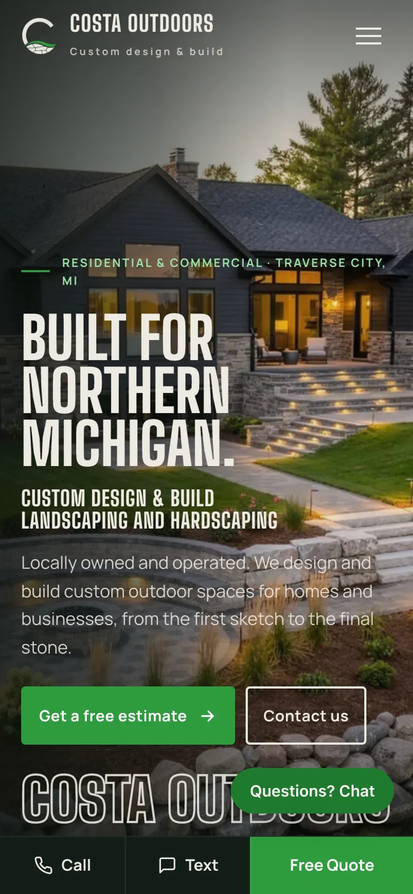
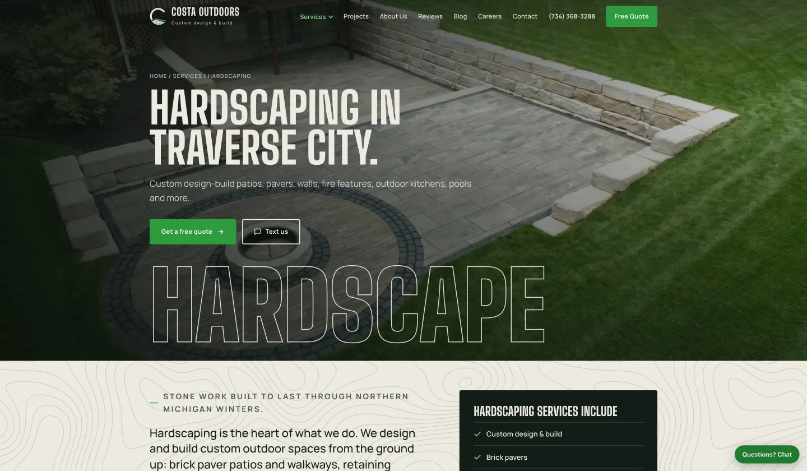
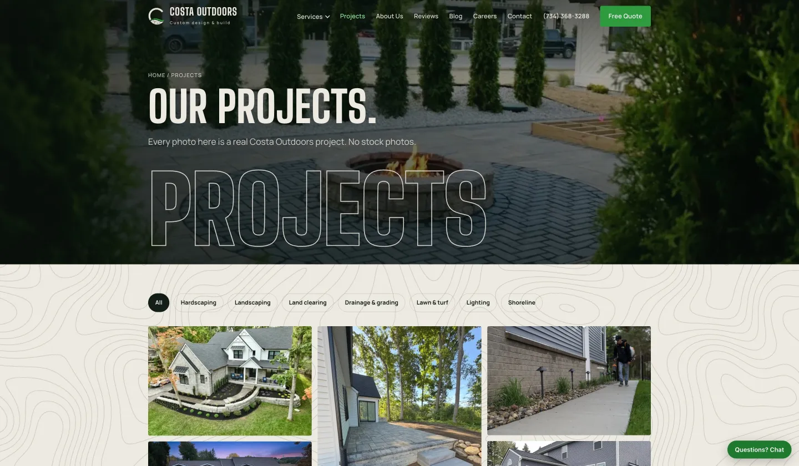
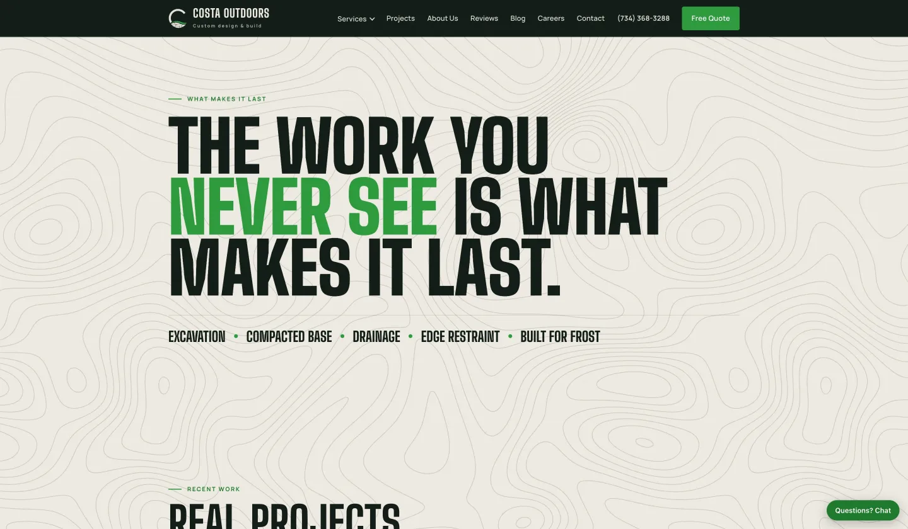
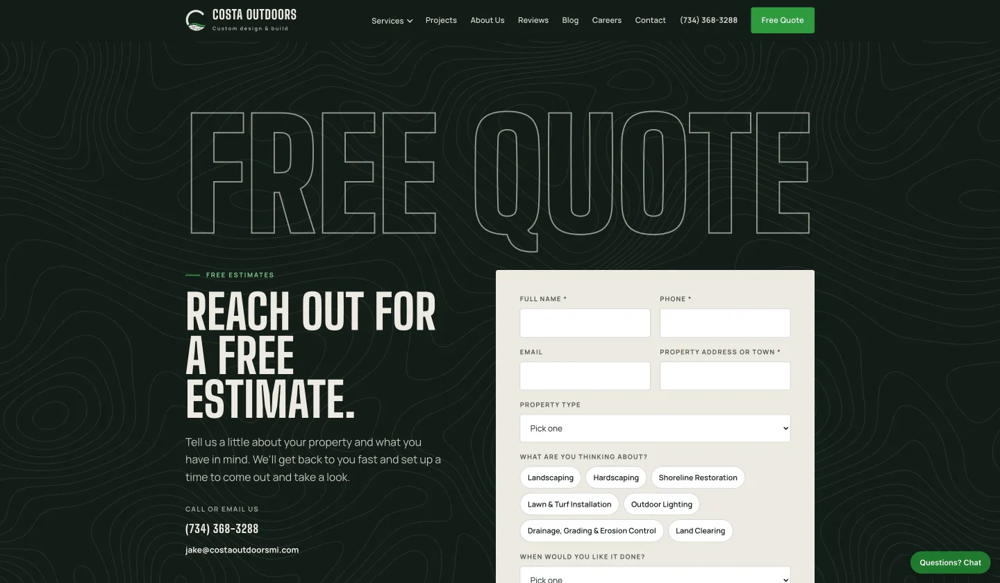
Great Marlin
Great Marlin is a private charter: one 36-foot sportfisher working the drop off Herradura Bay, one crew, one group at a time. I built the site the way the big yacht builders present their boats, calm and confident, with the boat as the star. It takes bookings on its own.
- 01
The boat turns a full 360°
The page opens on the boat turning slowly on the water, all by itself. Guests see exactly what they're stepping onto before they read a word.
- 02
Live sea conditions
Sky, wind, seas and swell, water temperature, sunrise and sunset off Herradura, updated live. A small seas and water readout even sits in the opening screen.
- 03
A trip planner that takes the booking
Four questions: the day, when, the beach, send. The price is on screen before they hit send, and they can add several days in one request.
- 04
Booking emails
Every request sends the guest a confirmation straight to their inbox and lands with us in the same thread we answer from. Nothing gets lost.
- 05
Seven ways to spend the day
Full, 3/4 and half day fishing, a surf day to a boat-access reef, Tortuga Island, a sunset cruise and custom events. Each has its own plan button and a WhatsApp shortcut with the question already written.
- 06
Door to the beach
The planner asks where guests are staying, lets them drop a pin for the driver, and offers hotel and airport rides through Jaco Transport, another site on this page.
- 07
A real fish guide
Twelve species with their peak seasons, real catch photos from this boat, and a map of the bay that shows how close the sailfish water is.
- 08
Pages built to be found
Separate pages for the full day and half day charters, the surf trip, a first-time offshore guide, getting here, transportation and tours.
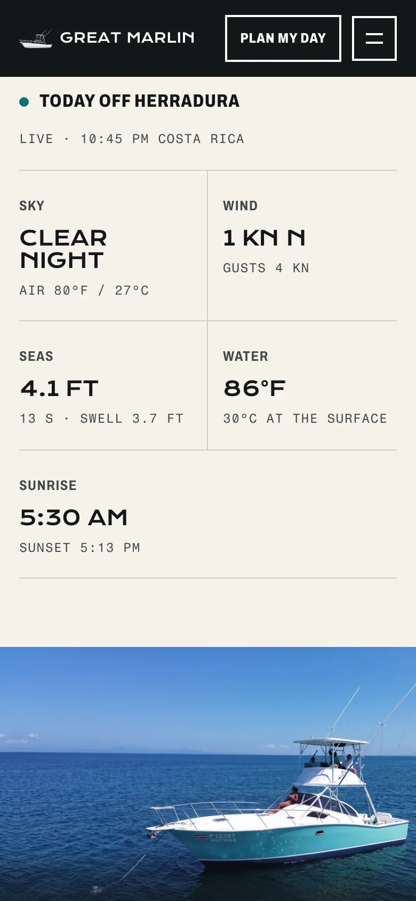
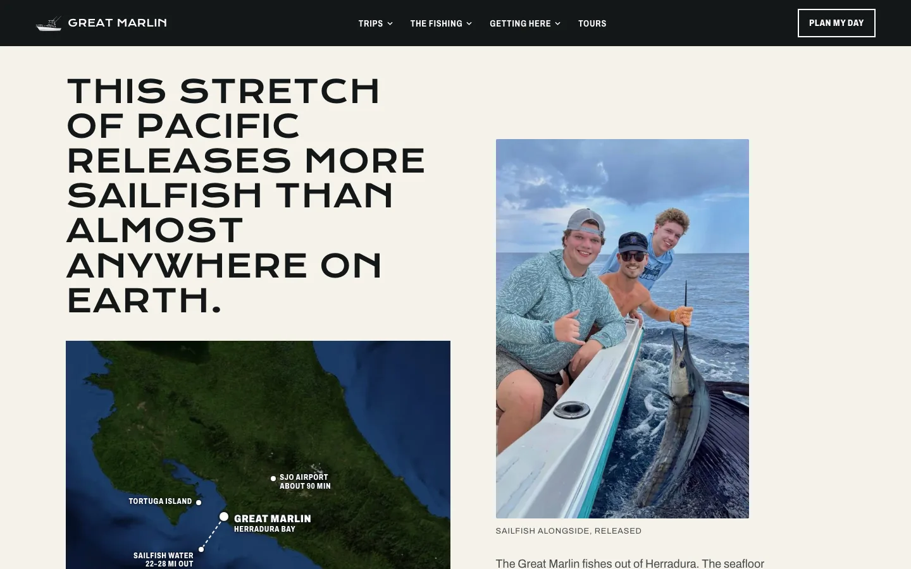
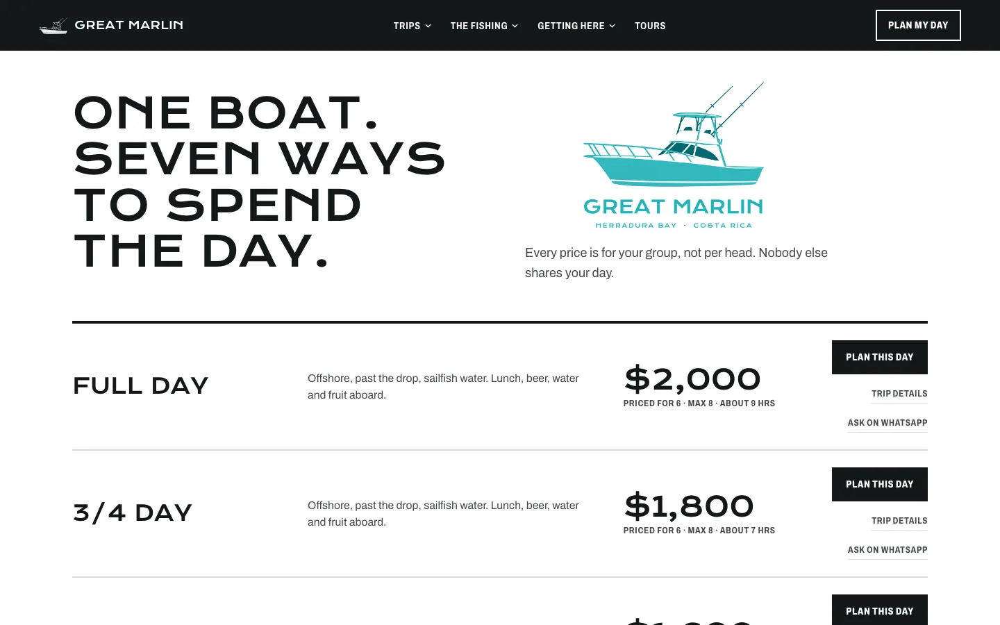
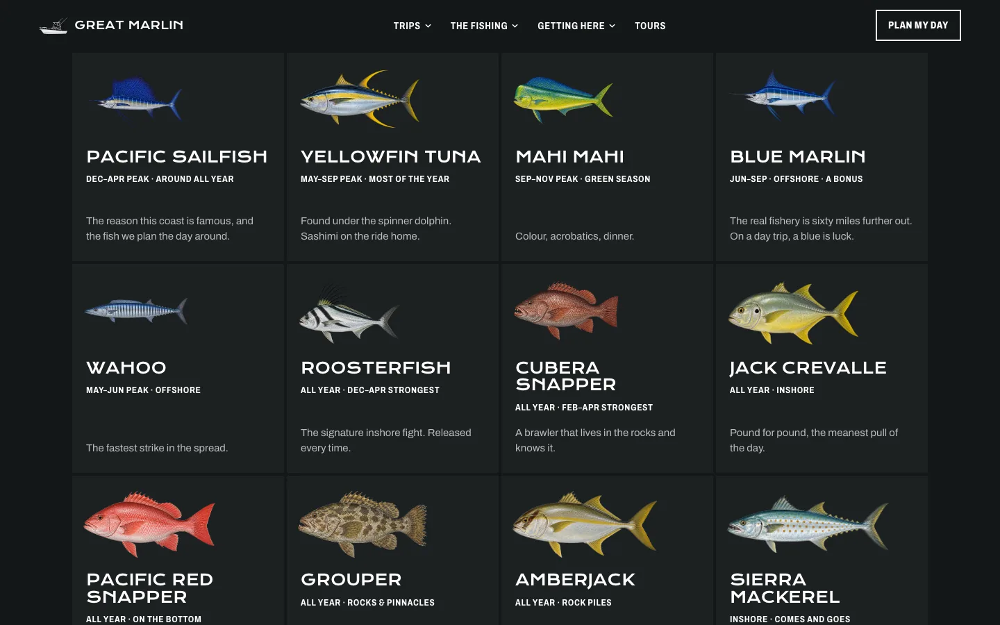
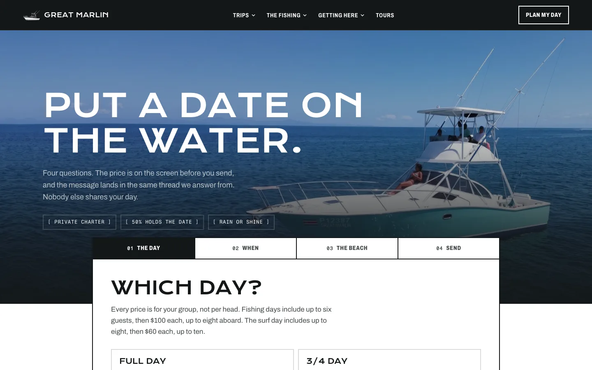
Go Fish Costa Rica
Steve and Liisa have run Go Fish since 2010 and earned TripAdvisor Travelers' Choice fifteen years in a row, but their old site looked like a dated brochure. I rebuilt it as 98 pages that tell one charter day from dawn to sunset, put their reviews and awards front and center, and made every page a way to start planning a trip.


- 01
One day, dawn to sunset
The homepage scrolls through a real charter day: on the sand, lines off, the shelf, the bite, lunch aboard, back on the beach, the sunset sail. By the end, guests know exactly what they're booking.
- 02
The whole fleet, sorted for you
15 sportfishing boats and 3 private catamarans, each with its own page. Guests filter by location, group size, budget and washroom, and every boat page works out an estimate for their group as they fill it in.
- 03
17 adventures
Zipline, ATVs, the sunset catamaran, Rio Celeste, the estuary, a spa day and more. All tours Steve and Liisa have done themselves, all bookable in the same request.
- 04
A four-step trip planner
Trip, when, pick, send. It asks what kind of day, which location is closer, the dates and the group, then points them to the boats that fit.
- 05
A trip cart for the whole week
Guests add boats and tours to My trip, drop a pin on where they're staying, say if they need transportation, and send the whole week as one request.
- 06
Reviews and awards up front
Fifteen years of Travelers' Choice, 5.0 from 590 TripAdvisor reviews, 5.0 on Google and a ten-year Ducks Unlimited award, right where they build trust.
- 07
Requests ready to confirm
Every request lands in their inbox with the dates, group and picks already laid out, so the team can confirm without a long back-and-forth.
- 08
Built to be found
Pages for every boat, adventure, restaurant and season, a blog, a map pin, WhatsApp on every page, and schema so Google understands the business.
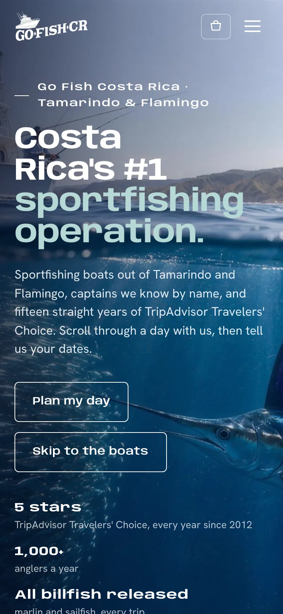
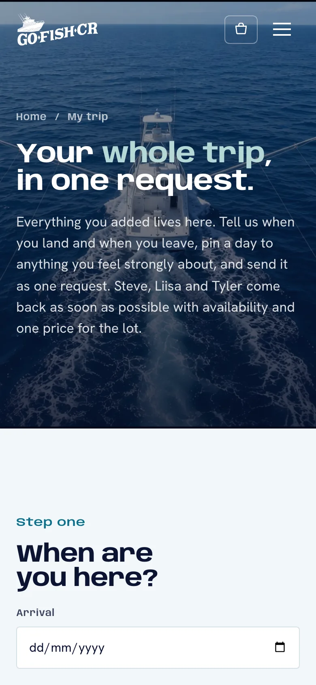
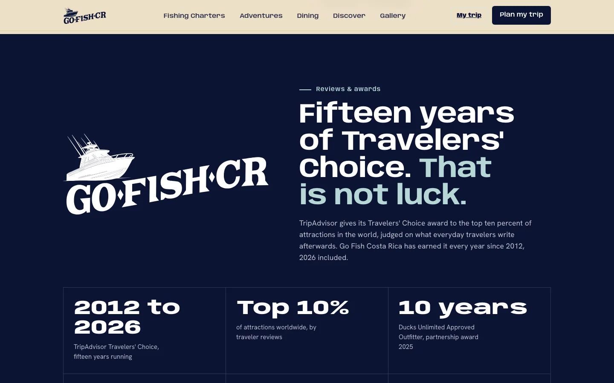
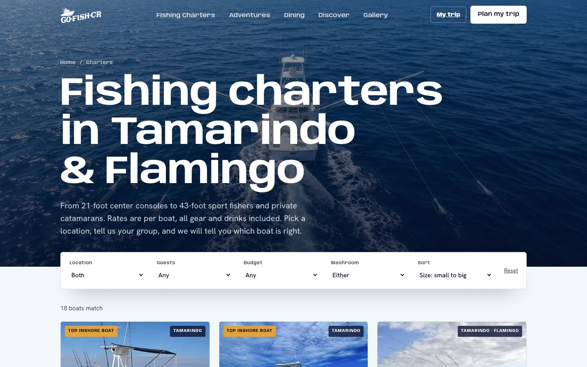
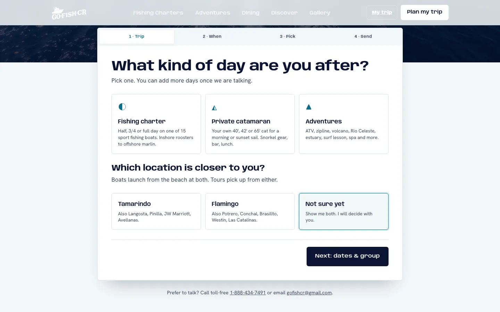
Coconut Office
A coworking and coliving retreat steps from Playa Hermosa's famous break: fast fiber, private apartments, a pool and a yoga deck. Their old site showed none of that. I rebuilt it as one cinematic page that sells the lifestyle first: surf at sunrise, work to an ocean breeze, end the day with people who feel like family.

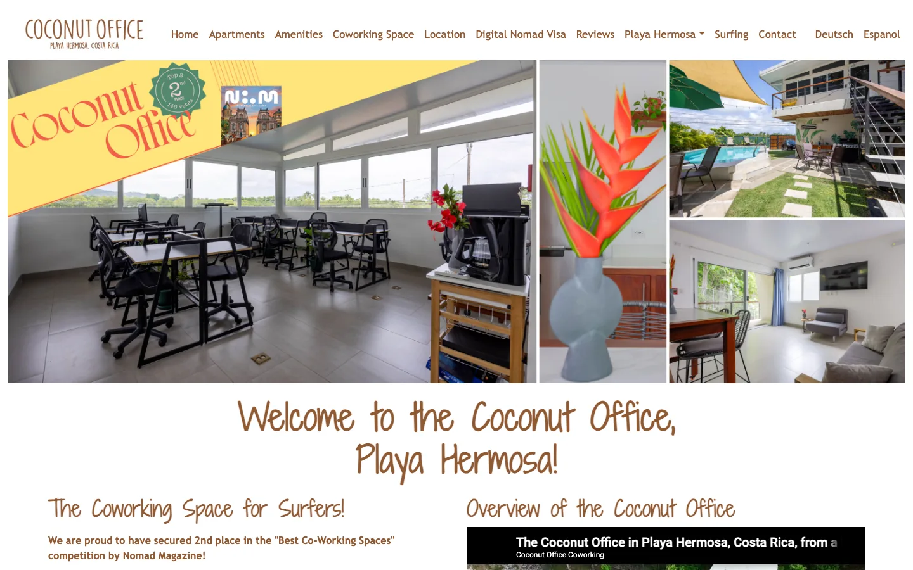
- 01
A cinematic first screen
Full-screen ocean, one clear line, "Work from the waves," and two buttons: explore the apartments or check availability.
- 02
The numbers nomads ask about
500 mbps fiber, generator-backed power around the clock and roughly 358 surfable days a year, right under the headline, because that's what remote workers want to know first.
- 03
Four apartments, side by side
Each unit gets its photos, size, beds and what's included, plus a video tour where there is one, so guests pick their place before they write.
- 04
A coworking space that looks the part
Desks with a sea view, Ethernet at the desk and a virtual tour, shown like a real office instead of an afterthought.
- 05
The surf, explained
Playa Hermosa as a World Surfing Reserve, the local breaks by name, the Saturday competitions, and a full surf guide page.
- 06
Three languages, one tap
English, Spanish and German, plus a guide page to Costa Rica's digital nomad visa for the people planning a long stay.
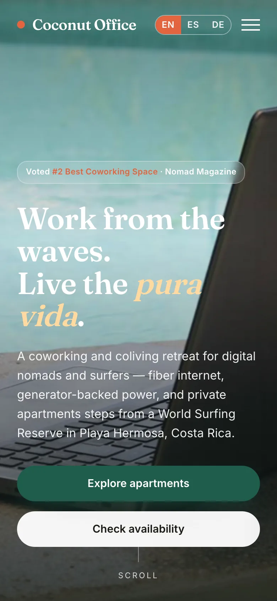
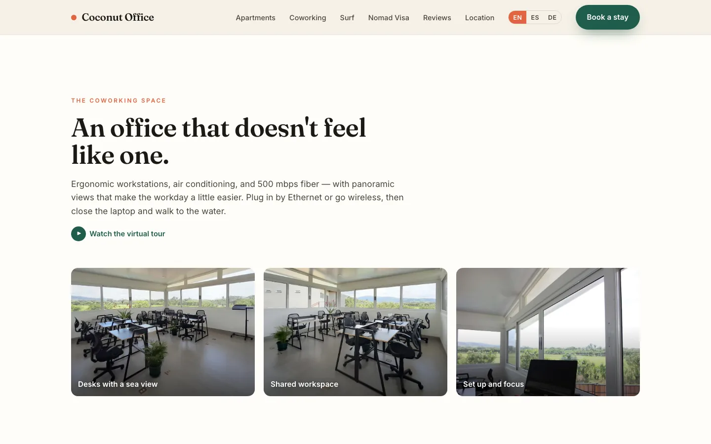
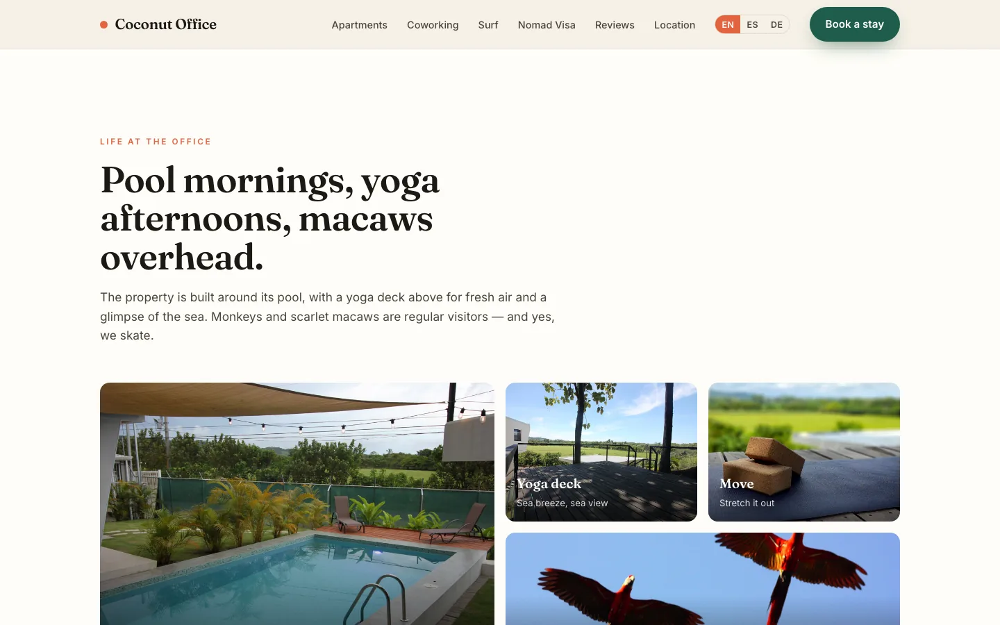
Jaco Transport
Jaco Transport needed more than a brochure. It needed something to run the business on. I built a full booking platform: guests see the price of their route and reserve online, every booking is confirmed by email, and behind the scenes a dispatch portal and a driver app keep every pickup on track.
- 01
A cinematic video hero
The page opens on moving water with the booking form right there, so a guest can go from landing to booked without hunting for anything.
- 02
Live, fixed route pricing
Popular routes show the drive time and price up front: SJO to Jaco, Manuel Antonio, La Fortuna, Monteverde, Dominical, Tamarindo. No surge, no hidden fees.
- 03
Reservations that ask the right questions
Pickup and drop-off, comfort level from economy car to Sprinter van, passengers, whether the road needs a 4x4, and an English-speaking driver if they want one.
- 04
Booking emails in three steps
The guest hears back at every stage, from request to confirmed ride, with the logo and trip details in every email. No guessing whether it went through.
- 05
Manual bookings for the team
Rides booked by phone or WhatsApp go into the same system by hand, so every trip lives in one place instead of on scraps of paper.
- 06
Dispatch and a driver app
A behind-the-scenes portal to run the day, and an app that puts each driver's pickups on their phone.
- 07
Route guides for Google
Pages like SJO Airport to Jaco compare every way to make the trip, with real prices, written to show up when travelers search.
- 08
English and Spanish
One tap at the top switches the whole site.
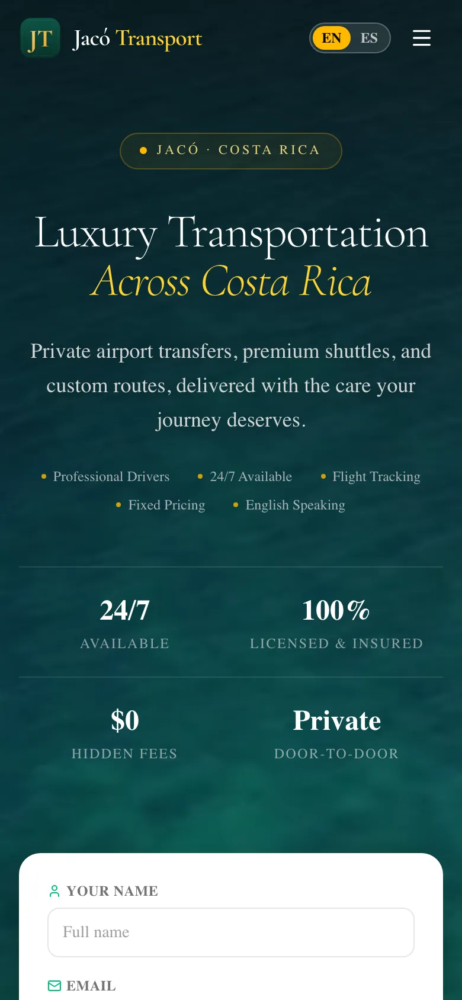
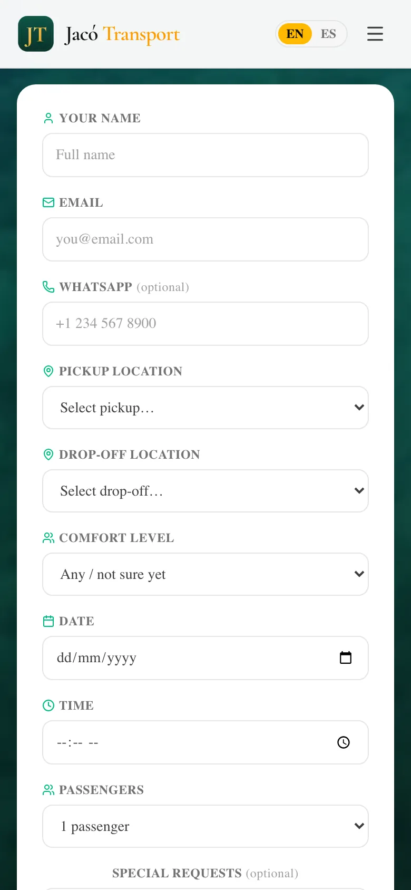
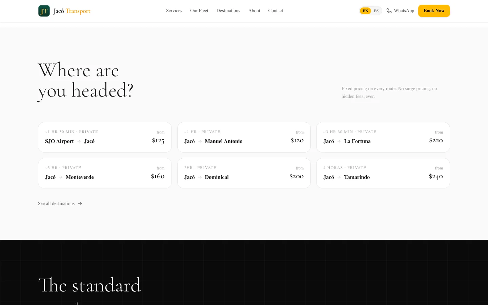
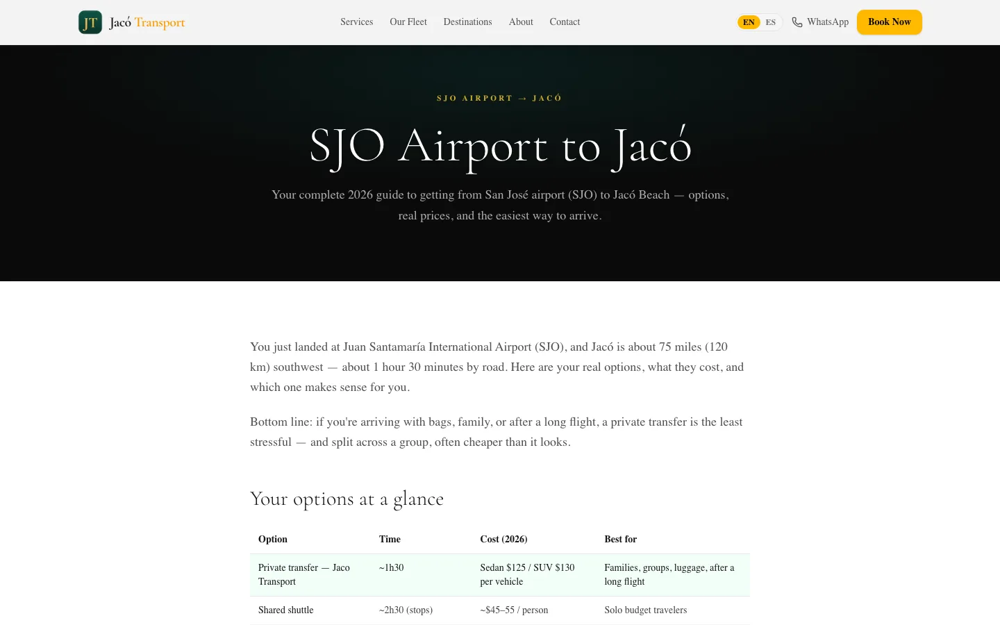
Infinite Discoveries
Infinite Discoveries is a tour and fishing-charter company that connects visitors with the best local operators around Jaco. The site has to sell while the team is out on the water, so every tour can be requested in a tap and every guest hears back right away.
- 01
A moody full-screen hero
Dark water, big type and two clear choices: explore the tours or message on WhatsApp.
- 02
19 tours, each with its own page
Waterfalls, ATVs, ziplines, Manuel Antonio, the crocodile river, Isla Tortuga and more, each with how long it takes, what's included and an instant request form.
- 03
A trip planner at /book
Pick one tour or build a whole trip, then send it as one request. A Your trip panel keeps count as they go.
- 04
An instant reply to every guest
The moment a request comes in, the guest gets a friendly auto-reply, so nobody wonders whether their message landed.
- 05
One-tap WhatsApp
Most visitors would rather text than fill in a form, so a WhatsApp button is never more than a thumb away.
- 06
English and Spanish
An EN / ES toggle at the top switches the whole site.
- 07
Pages that rank
Guides to the best Jaco tours, Jaco fishing charters and the Costa Rica fishing season, written for what people actually search.
- 08
A clear cancellation policy
Its own page, linked from every footer, so guests know the rules before they book and book with confidence.
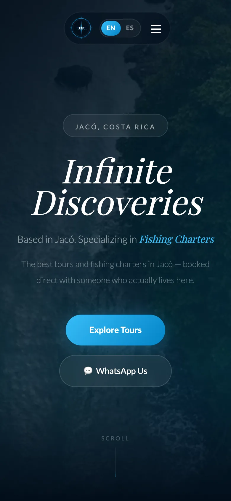
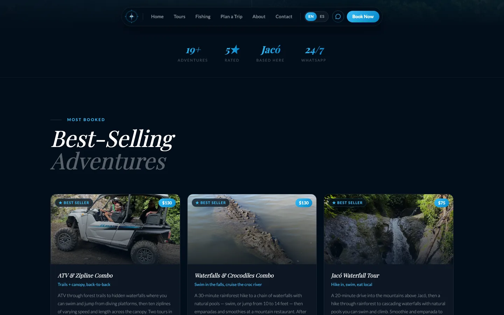
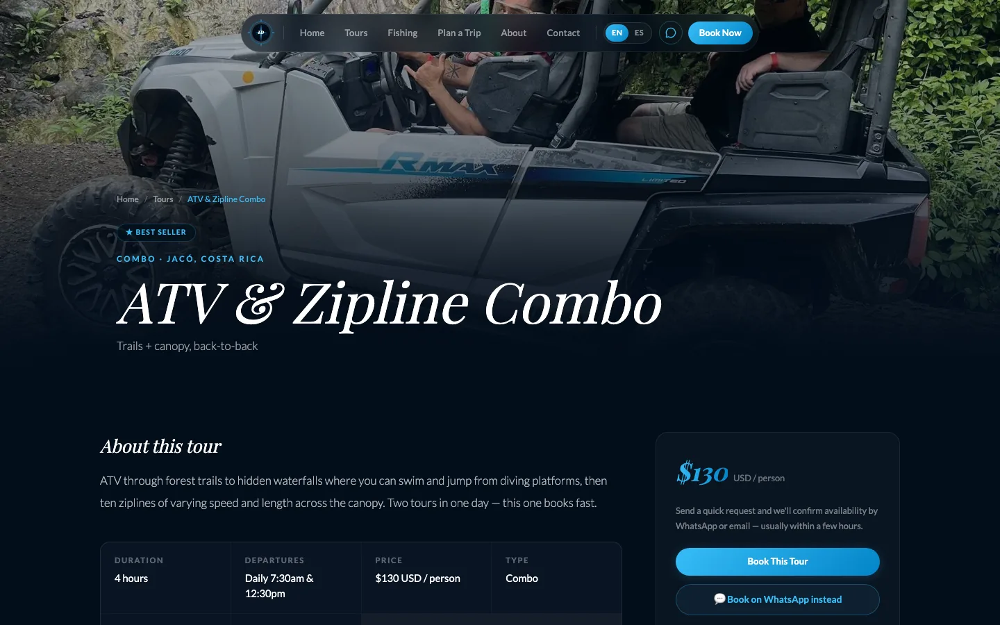
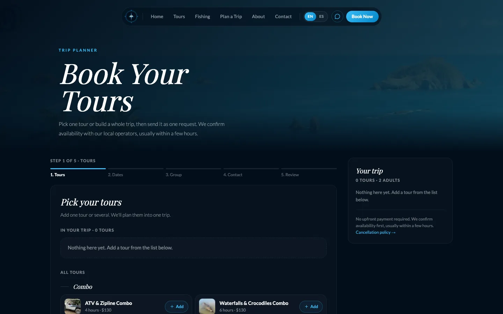
Little Waves Surf School
María's surf school in Jaco had no website at all, just word of mouth. I built her a bilingual one-pager styled like a surf-film poster, with her real prices, her own photos and booking that lands straight in her WhatsApp. It's live on her own domain.
- 01
A surf-film poster
Big type, a setting sun and "Starring María Jesús Mora." It feels like her, not like a template.
- 02
Real prices, no surprises
Private lessons, lessons for two, small groups and weekly kids camps, with the board, rash guard and safety briefing listed as included.
- 03
Meet María
Her story as a local surfer from Playa Jaco, her photos coaching on the sand, and why she teaches. People book a person, not a business.
- 04
Booking in three quick steps
Who's surfing, when, send. The details arrive as a WhatsApp message María confirms herself, with the time and meeting spot.
- 05
Answers before the first lesson
Real student reviews and a short FAQ: never surfed, how long, what to bring, where to meet, why the time depends on the tide.
- 06
English y Español, on her own domain
The whole page switches language in one tap, and it lives at littlewavessurf.com, a name that's hers.
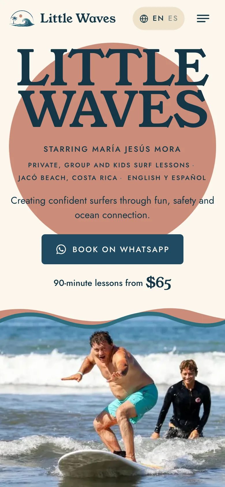
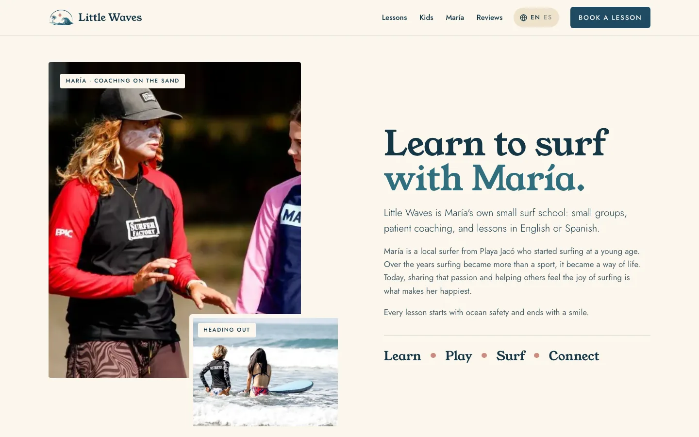
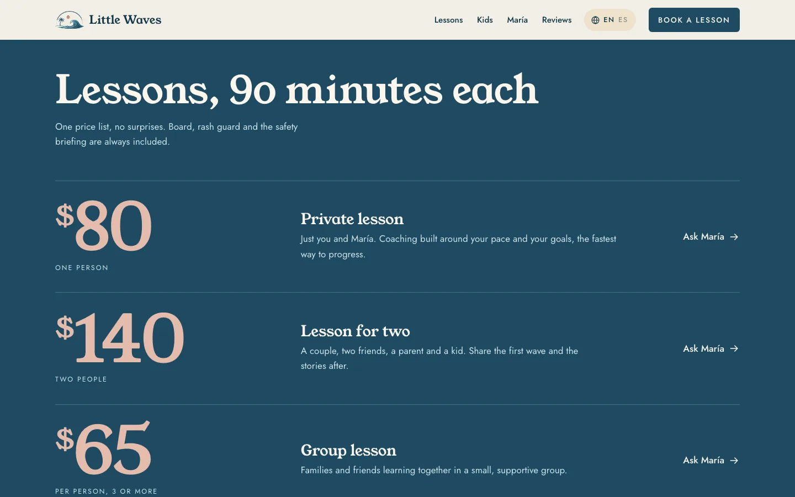
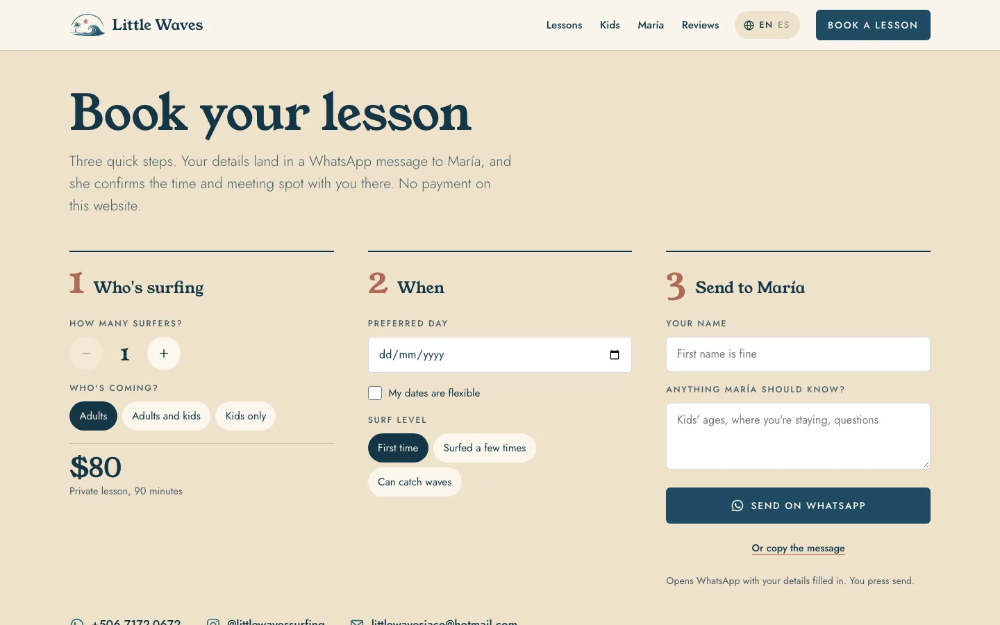